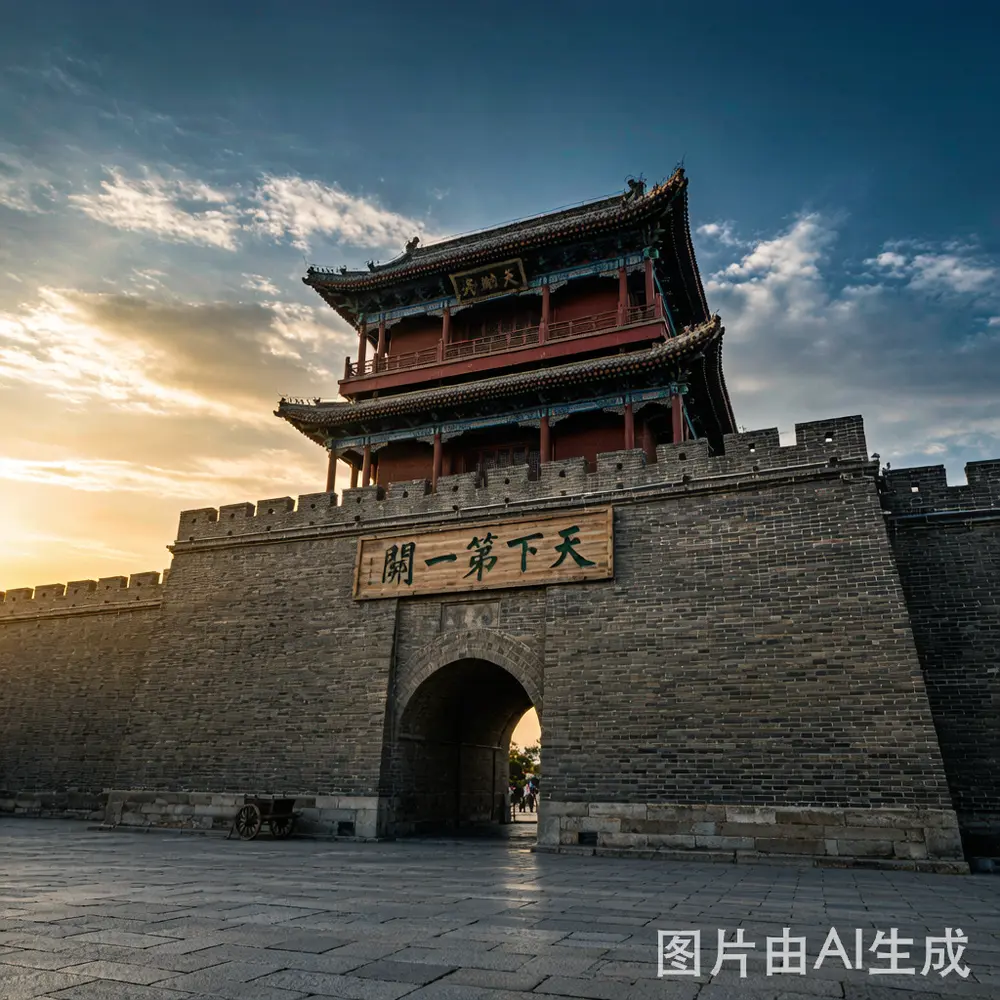
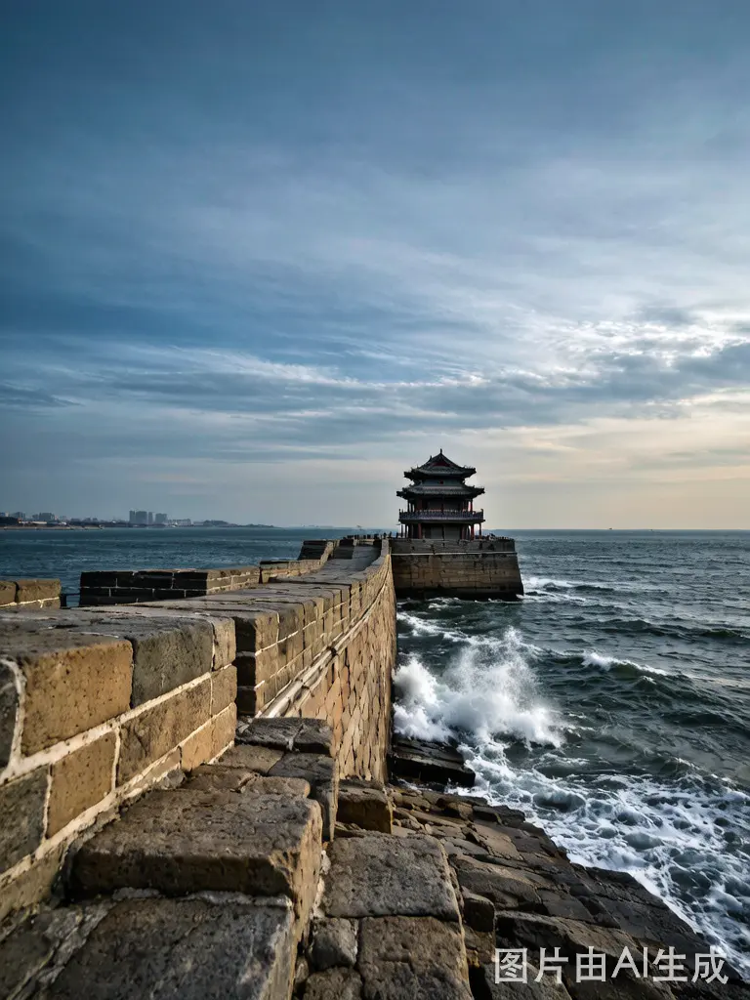
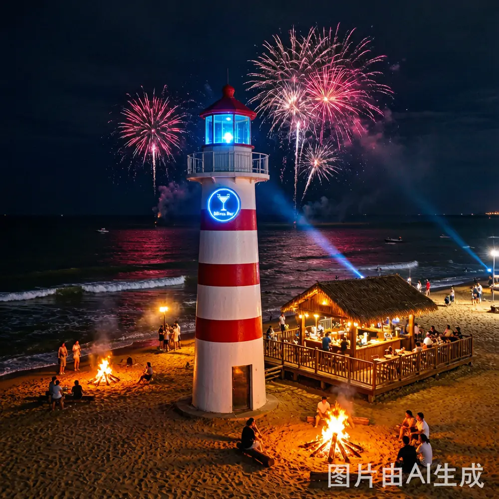
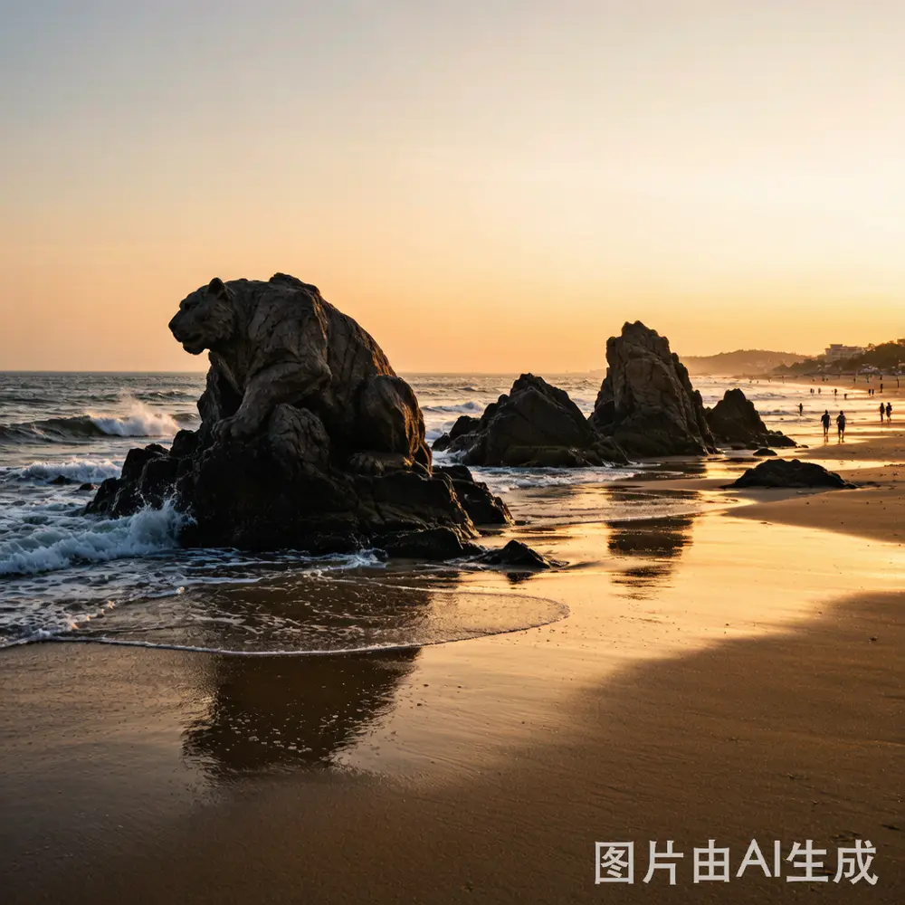

精选推荐
秦皇岛必玩景点 TOP10
根据游客评价、搜索热度和本地人推荐，精选秦皇岛最值得去的10个景点。每个都附有门票价格、游玩时间和实用攻略。

TOP 1
🌅 看日出圣地
鸽子窝公园
北戴河标志性景点，"红日浴海"奇景的最佳观赏地。每年接待游客量秦皇岛第一，百年经典景区。看日出、赶海、观鸟，一次满足。
🎫 35元
⏰ 建议2-3小时
⭐ 4.8分
查看详细攻略 →

TOP 2
🏰 天下第一关
山海关·天下第一关
明长城东北关隘，中国长城三大奇观之一。"天下第一关"巨匾高悬镇远楼之上，每个字1米见方，600年未换。登城楼俯瞰古城，感受历史沧桑。
🎫 40元
⏰ 建议3-4小时
⭐ 4.8分
查看详细攻略 →

5A
60元

200元

60元

免费
📍 更多必玩景点
💡 实用攻略
🎯 推荐行程组合
- • 经典1日游：鸽子窝日出 → 山海关 → 老龙头
- • 休闲2日游：碧螺塔 → 老虎石 → 联峰山
- • 深度3日游：加阿那亚 + 渔岛/南戴河
💰 省钱技巧
- • 老虎石2025年起免费
- • 联票比单买便宜20-30%
- • 淡季门票价格低30-50%
- • 提前在线预订有优惠